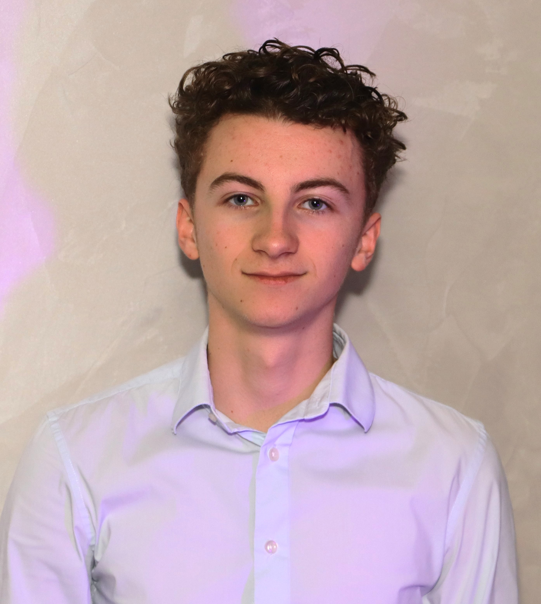

👤 Présentation & Projection professionnelle
Natan PONSARD
Étudiant BUT Réseaux & Télécommunications — Parcours Cybersécurité
IUT Grand Ouest Normandie
Campus 3 IFS
2025 – 2026
Bienvenue sur mon portfolio. Cette page retrace mon parcours de première année de BUT RT,
à travers des projets réalisés en autonomie, en groupe ou individuellement.
Vous y trouverez mes analyses réflexives, les compétences développées et acquises au cours des SAÉ.

👤 Présentation
Mon profil
Présentation
Étudiant de première année de BUT Réseaux et Télécommunications, passionné par le monde numérique et l'informatique en général. En dehors de la formation, je pratique la modélisation 3D sur logiciel pour concevoir et imprimer des objets.
Liens & contacts
🔗 LinkedIn : linkedin.com/in/…
📄 CV : Lien vers le CV
🗓 Parcours
Ma trajectoire
2022 – 2025
Baccalauréat Général
Spécialités Mathématiques & NSI (Numérique et Sciences Informatiques)
Obtenu
2025 – 2026 · En cours
BUT Réseaux & Télécommunications — S1
IUT Grand Ouest Normandie · Campus 3 IFS — Parcours Cybersécurité
En cours
2026 – 2028
BUT R&T — S2 à S6
Poursuite de la formation, approfondissement du parcours Cybersécurité
À venir
2028 et après
École d'ingénieurs — Cybersécurité
Objectif : intégrer une école spécialisée après le BUT
Projection
🎯 Projection professionnelle
Objectifs & orientations
Objectif à 3 ans
À l'issue des 3 ans de BUT, j'ai pour projet de poursuivre en école d'ingénieur spécialisée en Cybersécurité. Ce parcours me permettra de combiner les compétences réseau acquises en formation avec une expertise approfondie en sécurité des systèmes d'information — domaine dans lequel je souhaite exercer.